무선설비산업기사 (2003-08-31 기출문제)
1과목: 디지털 전자회로
1. LC 동조 발진기에 비해 수정 발진기의 특징으로 잘못 설명한 것은?
- 안정도가 높다.
- Q가 비교적 크다.
- 발진 주파수를 가변하기 어렵다.
- 저주파 발진기로 적합하다.
(정답률: 알수없음)

2. B급 증폭기의 최대 효율을 백분율로 표시하면?
- 25(%)
- 48.5(%)
- 78.5(%)
- 98.5(%)
(정답률: 알수없음)
3. 그림과 같은 카르노도(Karnaugh Map)에서 얻어지는 부울대수식은?
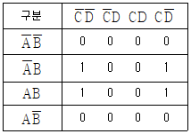
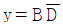
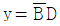
- y=AB
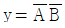
(정답률: 알수없음)
4. 그림의 회로 명칭은?
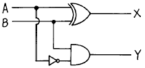
- 가산기
- RS 플립플롭
- 감산기
- 반감산기
(정답률: 알수없음)
5. 트랜지스터가 차단과 포화에서 동작될 때 무엇처럼 동작하는가?
- 스위치
- 선형증폭기
- 가변용량
- 가변저항
(정답률: 알수없음)
6. 그림의 회로는 어떤 논리 동작을 하는가?
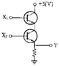
- AND
- OR
- NOR
- NAND
(정답률: 알수없음)
7. FET에서 VGS=0.7[V]로 일정히 유지하고 VDS를 6[V]에서 10[V]로 변화시켰을 때 ID가 10[㎃]에서 12[㎃]로 변하였다. 드레인 저항(rd)은 얼마인가?
- 0.5[㏀]
- 0.5[㏁]
- 2[㏀]
- 8[㏀]
(정답률: 알수없음)
8. R과 C에 의하여 발진주파수가 결정되는 발진회로에서 RC 시정수를 작게 하면 발진파형은 어떤 변화가 생기는가?
- 발진주파수가 낮아진다.
- 발진주파수가 높아진다.
- 아무런 변화가 없다.
- 펄스의 점유율(duty ratio)이 많이 커진다.
(정답률: 알수없음)
9. 그림과 같은 논리 회로의 출력은?
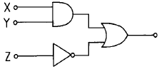
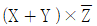
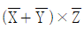
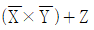
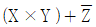
(정답률: 알수없음)
10. 900[KHz]의 반송파를 5[KHz]의 신호주파수로 진폭변조한 경우 피변조파에 나타나는 주파수 성분이 아닌 것은?
- 900[KHz]
- 895[KHz]
- 9⑤[KHz]
- 5[KHz]
(정답률: 알수없음)
11. JK 플립플롭을 사용하여 D형 플립플롭을 만들려면 외부 결선은 어떻게 하는 것이 옳은가?
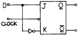
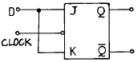
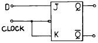
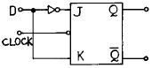
(정답률: 알수없음)
12. 그림과 같은 이상적인 연산 증폭기에서 Vs/Is는?
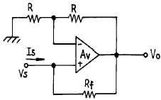
- -Rf
- R + Rf
- -R
- R - Rf
(정답률: 36%)
13. 전가산기(full adder)의 구조는?
- 입력 2개, 출력 4개로 구성된다.
- 입력 2개, 출력 3개로 구성된다.
- 입력 3개, 출력 2개로 구성된다.
- 입력 3개, 출력 3개로 구성된다.
(정답률: 알수없음)
14. 이득 100인 저주파 증폭기가 10[%]의 왜율을 가지고 있을 때 이것을 1[%]로 개선하기 위해서는 얼마의 전압 부궤환을 걸어 주어야 하는가?
- 1
- 0.9
- 0.09
- 0.009
(정답률: 알수없음)
15. 그림과 같은 회로의 입력에 정현파(Vi)를 인가했을 때의 전달 특성은? (단, 다이오드의 동작시 저항성분은 Rf이며, Rf＜R 이다.)
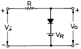
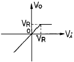
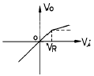
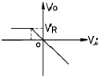
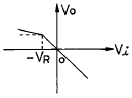
(정답률: 알수없음)
16. 주파수변조에서 변조지수가 6이고, 신호의 최고주파수를 10[kHz]라고 했을 때 그 소요 대역폭은 몇 [kHz]인가? (단, 광대역 FM이라 가정한다.)
- 20
- 60
- 100
- 120
(정답률: 알수없음)
17. 캐패시터로 필터링된 전파정류기의 부하저항이 적게 된다면 리플 전압은?
- 감소한다.
- 증가한다.
- 영향이 없다.
- 다른 주파수를 갖는다.
(정답률: 알수없음)
18. 다음은 에미터폴로워(emitter follower)의 임피던스 특성이다. 옳은 것은?
- 입력임피던스와 출력임피던스 모두작다.
- 입력임피던스와 출력임피던스 모두크다.
- 입력임피던스는 크고 출력임피던스는 작다.
- 입력임피던스는 작고 출력임피던스는 크다.
(정답률: 알수없음)
19. 다이오드 D1, D2의 항복 전압을 Vz라면 회로에서 D1, D2가 모두 차단(OFF)될 조건으로 옳은 것은?
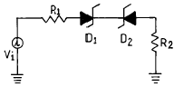
- Vi = Vz
- Vi = -Vz
- -Vz ＜ Vi ＜ Vz
- -Vz ＞ Vi ＞ Vz
(정답률: 알수없음)
20. 제너 다이오드를 사용하는 회로는?
- 증폭회로
- 검파회로
- 전압안정회로
- 저주파발진회로
(정답률: 알수없음)
2과목: 무선통신 기기
21. 단파 수신기에서 페이딩(Fading)에 의한 수신전계 강도 변화에 의한 수신기 감도를 안정시키기 위한 회로로 가장 타당한 것은?
- 자동주파수 제어회로 (AFC)
- 자동이득 조정회로 (AGC)
- 자동잡음 제어회로 (ANL)
- 자동전력 제어회로 (APC)
(정답률: 알수없음)
22. FM 수신기 복조기에서 Foster - Seely 형과 Ratio - Detector 형에서 검파감도의 비는?
- 1 : 1
- 2 : 1
- 1 : 2
- 4 : 1
(정답률: 알수없음)
23. 푸쉬풀 증폭기에서 출력파형의 찌그러짐이 적어지는 이유는?
- 우수차 고조파가 상쇄되기 때문이다.
- 기수차 고조파가 전도되기 때문이다.
- 정현파 발진회로의 역할을 하기 때문이다.
- 직류성 파형으로 되기 때문이다.
(정답률: 알수없음)
24. 그림의 단상 반파 정류회로에서 정류효율(η)은 얼마인가? (단, 다이오드의 순방향 저항은 20Ω 이다.)
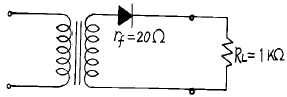
- 25.6[%]
- 32.6[%]
- 39.8[%]
- 42.6[%]
(정답률: 알수없음)
25. 다음중 저궤도위성이 아닌 것은?
- INMARSAT
- IRIDIUM
- GLOBAL STAR
- ODYSSEY
(정답률: 알수없음)
26. 통신위성과 지구국 사이의 데이터 전송에 필요한 전력은 다음 중 어떤 비례식으로 늘려 주어야 하는가?
- 거리에 비례
- 거리의 제곱에 비례
- 거리의 3승에 비례
- 거리에 반비례
(정답률: 알수없음)
27. FM 송수신기에서 엠파시스 회로를 사용하는 이유는?
- S/N비를 개선한다.
- 주파수 선택도를 개선한다.
- 전송 효율을 높인다.
- 신호 왜곡을 감소한다.
(정답률: 알수없음)
28. 정지궤도(GEO) 위성을 설명한 것은?
- 위성의 고도가 약 300 ∼ 1500 km 이다.
- 이동통신 위성에 많이 사용된다.
- 극지점 통신용 이다.
- 위성의 수 3개로 국제통신을 할 수 있다.
(정답률: 알수없음)
29. 그림과 같은 발진회로가 발진하기 위한 조건은?
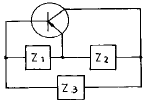
- Z1 : 유도성 Z2 : 용량성 Z3 : 용량성
- Z1 : 유도성 Z2 : 용량성 Z3 : 유도성
- Z1 : 용량성 Z2 : 유도성 Z3 : 유도성
- Z1 : 용량성 Z2 : 용량성 Z3 : 유도성
(정답률: 알수없음)
30. 고주파회로 측정시의 주의사항에 해당되는 것은?
- 회로소자 용량을 크게 할 것
- 표유 임피던스를 적게 할 것
- 차폐를 하지 말 것
- 회로의 임피던스 정합을 크게 할 것
(정답률: 알수없음)
31. Parametric 증폭기의 설명중 잘못된 것은?
- 비선형 리액턴스 소자로 Varector diode가 실용적으로 쓰인다.
- 통신위성, 기상레이더 등에 널리 쓰인다.
- 잡음 특성이 좋다.
- 고정의 비선형 리액턴스 소자를 쓴 증폭기이다.
(정답률: 알수없음)
32. AM 송신기의 출력이 80% 변조시 200[W]이었다면 30% 변조 시에는 출력이 얼마나 되겠는가?
- 약 75[W]
- 약 152[W]
- 약 159[W]
- 약 165[W]
(정답률: 46%)
33. SSB전송방식과 관계 없는 것은?
- 다단 변조를 행한다.
- 여파기(Filter)로서 양측파대를 취한다.
- DSB에 비해 점유 주파수 대폭이 좁다.
- 평형 변조기에 의해 반송파를 제거한다.
(정답률: 알수없음)
34. 150[㎒]정도의 전파의 파장을 측정하고자 한다. 레헤르선 길이는 몇 [m]이상 이어야 하는가?
- 2[m]
- 1[m]
- 0.4[m]
- 0.1[m]
(정답률: 64%)
35. AM 수신기의 종합특성과 관련이 없는 것은?
- 감도
- 선택도
- 충실도
- 변조도
(정답률: 알수없음)
36. FM 수신기 구성 회로가 아닌 것은?
- Squelch 회로
- 진폭제한기
- De-emphasis 회로
- 주파수체배기 회로
(정답률: 알수없음)
37. 피변조 신호를 오실로스코프에 넣었더니 그림과 같은 파형을 얻었다. 다음 설명 중 옳은 것은?
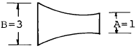
- 50[%]의 왜곡을 갖는 과변조
- 33[%]의 왜곡을 갖는 과변조
- 위상 왜곡이 있는 50[%]변조
- 진폭 왜곡이 있는 50[%]변조
(정답률: 알수없음)
38. AM수신기에서 선택도를 향상시키기 위한 조치로 가장 적절한 것은?
- 중간 주파수는 높은 것을 선정한다.
- 고주파 증폭단을 둔다.
- 중간 주파증폭기의 대역은 넓게 취한다.
- 동조회로의 Q를 낮게 한다.
(정답률: 알수없음)
39. 전원 정류기의 부하에 대한 전압 변동율을 측정하였더니 무부하시 출력전압은 Vo이었고, 부하시 출력전압은 VL이었다. 전압 변동율은 얼마인가?
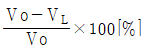
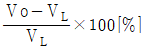
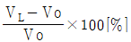
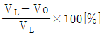
(정답률: 알수없음)
40. AM송신기의 점유주파수 대역폭 측정에 적당하지 않는 것은?
- 브라운관의 리서쥬도형에 의한 측정
- 에너지에 의한 측정
- 스펙트럼 분석에 의한 측정
- 필터에 의한 측정
(정답률: 알수없음)
3과목: 안테나 개론
41. 어떤 안테나의 복사전력이 100[W]이고, 최대 복사 방향으로 거리 r인 점의 전계강도가 300[㎶/m]이었고 같은 송신점에 반파장다이폴 안테나를 세워 복사전력 200[W]일때 동일지점 r점에서 100[㎶/m]의 전계강도가 측정 되었다면 피측정 안테나의 상대이득은 몇 ㏈인가?
- 9.54
- 12.55
- 15.03
- 20.14
(정답률: 알수없음)
42. 평행2선식 급전선의 특성 임피던스는 무엇에 의해서 정해지는가?
- 선간거리
- 선의굵기
- 선로의 길이
- 선간거리와 선의 굵기
(정답률: 알수없음)
43. 파라보라안테나(Parabola antenna)에서 파라보라의 개구 직경이 클수록 어떻게 되는가?
- 지향성이 커지고 이득은 적어진다.
- 지향성은 변함없으나 이득은 커진다.
- 지향성이 커지고 이득도 커진다.
- 지향성은 커지나 이득은 변함없다.
(정답률: 알수없음)
44. 주파수 1000(㎑)용의 1/4 파장 수직접지 안테나의 실효길이는 얼마인가?
- 37.7(m)
- 47.7(m)
- 57.7(m)
- 67.7(m)
(정답률: 알수없음)
45. 다음중 가장 광대역인 안테나는?
- Discone Ant.
- Logarithmically periodic Ant.
- Horn reflector Ant.
- Dipole Ant.
(정답률: 알수없음)
46. 전파가 전파하는 도중 전파로에 전기적 성질이 변한 곳이 있으면, 그지점에서 전파의 굴절작용이 생겨서 전파의 진행 방향이 변한다. 이 현상과 가장 관계 깊은 오차는?
- 야간 오차
- 해안선 오차
- 대척점 오차
- 편파 오차
(정답률: 알수없음)
47. 그림과 같이 서로 다른 크기의 도파관 A와 C를 도파관 B로 정합하려면 B의 특성 임피던스는 얼마인가?
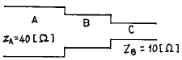
- 20[Ω]
- 30[Ω]
- 50[Ω]
- 400[Ω]
(정답률: 알수없음)
48. 장ㆍ중파대에서 야간에 유용한 전리층파 전파는?
- E층 반사파
- F층 반사파
- 스포래딕 E층 반사파
- 전리층 산란파
(정답률: 알수없음)
49. 자유 공간에 놓인 미소 다이폴(dipole)에 의한 임의의 점에서 복사전계를 나타낸 식은?
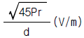
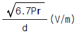
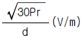
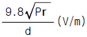
(정답률: 알수없음)
50. 대류권 산란파 전파의 특징중 잘못된 것은?
- 지향성이 예민한 공중선이 필요하다.
- 적당한 주파수는 200-3000[㎒]이다.
- 다이버시티(Diversity)방식에 의해서 실용 가능하다.
- 지리적 제한을 받지 않는다.
(정답률: 알수없음)
51. 반파장 더블렛(doublet)의 단축율 δ 의 표시로써 옳은 것은? (단, Z0는 특성 임피던스 )
- δ ≒ 42.55/Zo
- δ ≒ 42.55/(πㆍZo)
- δ ≒ 73.13/Zo
- δ ≒ 73.13/(πㆍZo)
(정답률: 알수없음)
52. 전리층의 전자밀도가 N[개/m3]일때 임계주파수는?
- fo=81√N
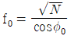
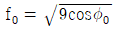
- fo=9√N
(정답률: 알수없음)
53. 다음중 인공잡음의 원인에 속하지 않는 것은?
- 글로우 방전
- 코로나 방전
- 불꽃 방전
- 공전 방전
(정답률: 알수없음)
54. 루우프 안테나를 장.중파대의 방향탐지에 사용하는 경우 발생되는 문제점은 야간오차이다. 이를 방지하기 위하여 루우프 안테나의 수평부분을 제거한 안테나는?
- 애드콕크(adcock) 안테나
- 웨이브(wave) 안테나
- T형 안테나
- 역 L형 안테나
(정답률: 알수없음)
55. 다음중 종단저항이 없는 안테나는 어느 것인가?
- 웨이브 안테나
- 어골형 안테나
- 롬빅 안테나
- 정관형 안테나
(정답률: 40%)
56. 안테나의 손실저항이 발생하는 원인이 아닌 것은?
- 접지저항에 의한 손실
- 복사저항의 증가에 따른 손실
- 도체저항에 의한 손실
- 유전체 손실
(정답률: 알수없음)
57. 다음 중 전파의 특성에 관한 설명 중 틀린 것은?
- 유전율이 커지면 파장은 길어진다.
- 전계 벡터가 X축과 Y축으로 구성되어 크기가 같은 경우에는 원편파라고 한다.
- 복사 전계의 크기는 거리에 반비례한다.
- 전파의 주파수가 높을수록 직진성이 강하다.
(정답률: 알수없음)
58. 다음중 비동조 급전선의 설명으로 맞지 않는 것은?
- 임피던스 정합 회로를 사용한다.
- 급전선상에는 진행파를 실어서 전송한다.
- 전송 효율이 동조 급전선 보다 나쁘다.
- 동축 케이블을 비동조 급전선으로 사용한다.
(정답률: 알수없음)
59. 마이크로파에 사용하는 안테나의 이득과 관계없는 것은?
- 구경(aperture)
- 주파수
- 송신기 출력
- 반사면의 고르기
(정답률: 알수없음)
60. 무손실 전송선로의 인덕턴스가 1[μH/m], 캐패시턴스가 400[pF/m]일 때 부하임피던스가 100[Ω]인 경우 종단에서의 반사계수는?
- 1/2
- 1/3
- 1/4
- 1/5
(정답률: 알수없음)
4과목: 전자계산기 일반 및 무선설비기준
61. 정보통신기기인증서에 기재사항이 아닌 것은?
- 기기의 명칭
- 인증의 종류
- 인증번호
- 인증의 명칭
(정답률: 알수없음)
62. 자료형 중에서 가장 적은 비트를 필요로 하는 것은?
- 실수형 자료
- 정수형 자료
- 논리형 자료
- 문자형 자료
(정답률: 알수없음)
63. 읽고 쓰기가 가능하고 전원이 소멸되어도 기억된 내용이 지워지지 않는 RAM과 같은 ROM은?
- 캐시메모리
- 플레시메모리
- 가상메모리
- 연상기억장치
(정답률: 알수없음)
64. 미국 표준 코드로서 1개의 패리티 비트와 3개의 존 비트, 그리고 4개의 디지트 비트로 구성되는 코드체계는?
- 8421 코드
- ASCII 코드
- Hamming 코드
- EBCDIC 코드
(정답률: 알수없음)
65. 다음중 전자파적합등록을 해야 하는 기기는?
- 전자파로부터 영향을 받는 기기
- 약사법에 의한 품목허가를 받은 의료용구
- 자동차관리법에 의한 형식승인을 얻은 자동차
- 전기통신기본법에 의한 형식승인을 얻은 전기통신기자재
(정답률: 알수없음)
66. 다음 중 CPU가 수행하는 4개 사이클(cycle)에 속하지 않는 것은?
- Fetch cycle
- Execute cycle
- Interrupt cycle
- jump cycle
(정답률: 알수없음)
67. 무선설비규칙에서 디지털 텔레비전 방송국의 송신설비에 대한 공중선전력 허용편차는?
- 상한 5퍼센트, 하한 10퍼센트
- 상한 5퍼센트, 하한 5퍼센트
- 상한 10퍼센트, 하한 20퍼센트
- 상한 50퍼센트, 하한 20퍼센트
(정답률: 알수없음)
68. 순서도의 작성 시기는?
- 입.출력 설계 후
- 타당성 조사 후
- 프로그램 코딩 후
- 자료 입력 후
(정답률: 알수없음)
69. 무선설비로서 형식등록대상기기에 해당되는 것은?
- 라디오부이의 기기
- 네비텍스수신기
- 경보자동전화장치
- 선박국용 무선방위측정기
(정답률: 60%)
70. 마이크로 컴퓨터에서 시스템 버스 중 틀린 것은?
- data bus
- address bus
- control bus
- I/O bus
(정답률: 알수없음)
71. 다음중 송신할 정보형태로서 맞지 않는 것은?
- 전신-자동수신용 - A
- 전화 - E
- 텔레비전(영상) - F
- 팩시밀리 - C
(정답률: 알수없음)
72. 아마추어국 및 실험국의 송신설비의 공중선전력은 무엇으로 표시하는가?
- 첨두전력
- 평균전력
- 반송파전력
- 규격전력
(정답률: 알수없음)
73. 캐시 메모리를 사용하는 이유로 가장 타당한 것은?
- 평균 액세스 시간이 증가시키기 위해 사용한다.
- 프로그램의 총 실행 시간을 단축시킬 수 있다.
- 기억 용량이 증가한다.
- 기억 용량이 감소한다.
(정답률: 90%)
74. 시프트 레지스터에 저장된 데이터를 좌로 1비트 이동 후 데이터 값은? (단, 자리넘침은 없음)
- 원래 데이터의 2 배
- 원래 데이터의 4 배
- 원래 데이터의 1/2 배
- 원래 데이터의 1/4 배
(정답률: 알수없음)
75. 전파관계법에 규정된 규격전력은?
- 무변조 상태에서 무선주파수 1[㎐]사이에 송신기에서 공중선계의 급전선에 공급되는 평균전력을 말한다.
- 통상 동작상태에서 변조포락선의 파고에서의 무선주파수 1[㎐]간에 송신기로부터 공중선계의 급전선에 공급되는 평균전력을 말한다.
- 송신장치의 종단증폭기의 정격출력을 말한다.
- 무변조시의 종단 진공관에 공급되는 직류양극전압에 직류양극전류를 곱한 것을 말한다.
(정답률: 알수없음)
76. 다음 중 명령어의 주소부에 데이터를 직접 넣어주는 방식은?
- 절대 번지 지정
- 즉치(immediate)번지 지정
- 상대 번지 지정
- 레지스터 번지 지정
(정답률: 알수없음)
77. 인터럽트를 발생시키는 장치들을 직렬로 연결시키는 하드웨어적인 우선 순위 제어 방식은?
- hand shaking
- daisy chain
- spooling
- polling
(정답률: 알수없음)
78. 다음 중 전파의 첨두포락선전력은 무엇으로 표시하는가?
- PR
- PX
- PY
- PZ
(정답률: 알수없음)
79. C3F, F3E, G3E전파의 텔레비전 방송국의 무선설비로서의 점유주파수대폭의 허용치는?
- 16[㎑]
- 3[㎑]
- 6[㎒]
- 27[㎒]
(정답률: 알수없음)
80. 산업용 전파응용설비에서 사용하는 고주파출력은 몇 W를 초과하는 것을 말하는가?
- 10 W 초과
- 50 W 초과
- 100 W 초과
- 500 W 초과
(정답률: 알수없음)
안정도가 높은 이유는 수정 발진기가 LC 발진기와 달리 발진 주파수가 변하지 않기 때문이다. 또한 Q가 비교적 크다는 것은 수정 발진기가 LC 발진기보다 더 좋은 품질의 발진을 할 수 있다는 것을 의미한다. 저주파 발진기로 적합하다는 것은 수정 발진기가 저주파에서도 안정적으로 발진할 수 있다는 것을 의미한다.